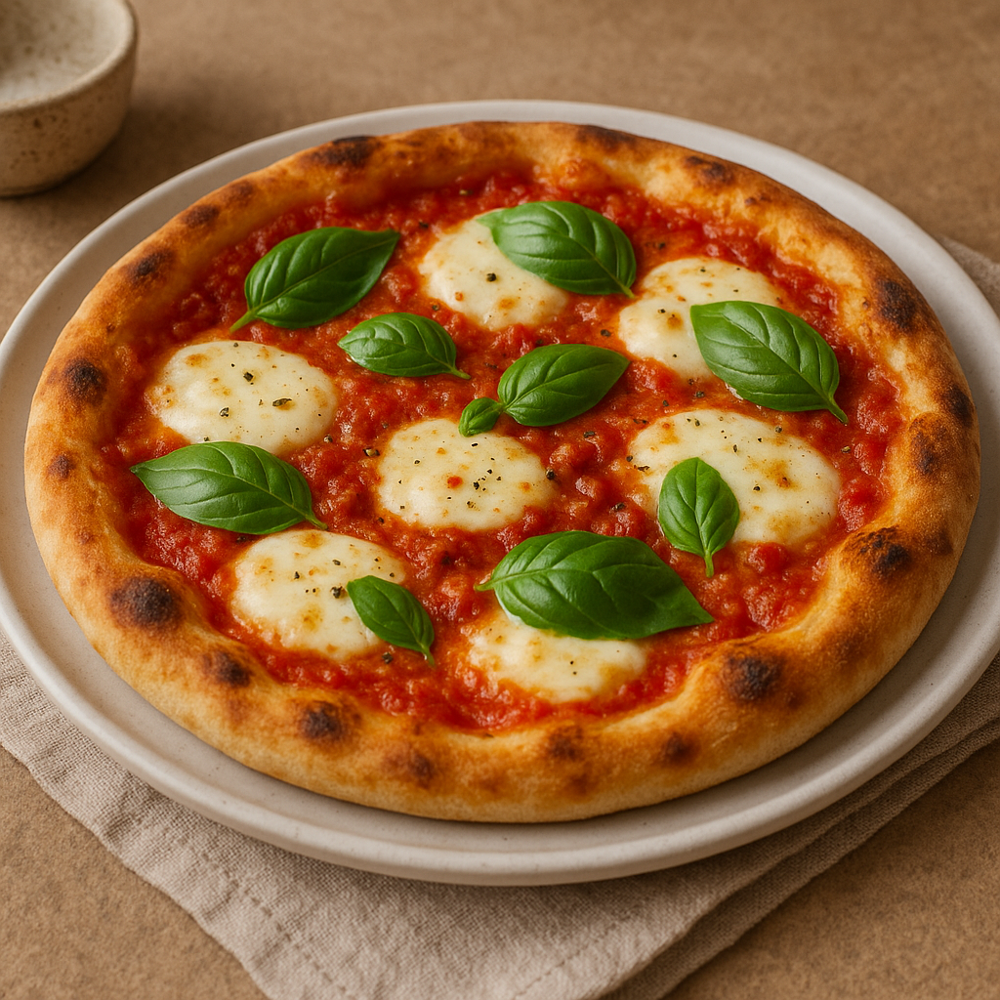

Dies ist ein Pizza-Rezept!
Zurück zur Startseite

Ein knuspriger, dünner Pizzaboden mit fruchtiger Tomatensauce,
zartem Mozzarella und frischem Basilikum –
ein italienischer Klassiker mit einfacher, aber intensiver Aromatik.
Zutaten:
- 300 g Pizzateig (selbstgemacht oder fertig)
- 200 g passierte Tomaten
- 1 EL Olivenöl
- 1 Knoblauchzehe, fein gehackt
- 1 TL getrockneter Oregano
- Salz & Pfeffer nach Geschmack
- 200 g Mozzarella (in Scheiben oder zerrupft)
- Frisches Basilikum
Schritt für Schritt Anleitung:
- Backofen auf 220°C (Ober-/Unterhitze) vorheizen.
- Passierte Tomaten mit Olivenöl, Knoblauch, Oregano, Salz & Pfeffer verrühren.
- Pizzateig auf einem Backblech mit Backpapier ausrollen.
- Tomatensauce gleichmäßig auf dem Teig verteilen.
- Mozzarella darauflegen.
- Pizza auf mittlerer Schiene ca. 12–15 Minuten backen, bis der Rand goldbraun ist.
- Nach dem Backen mit frischem Basilikum und optional Parmesan bestreuen.